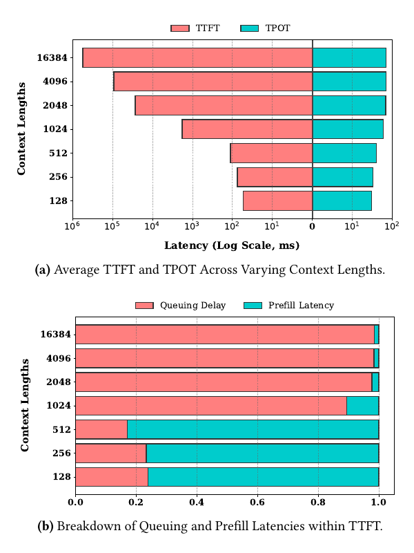
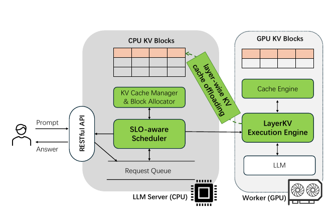
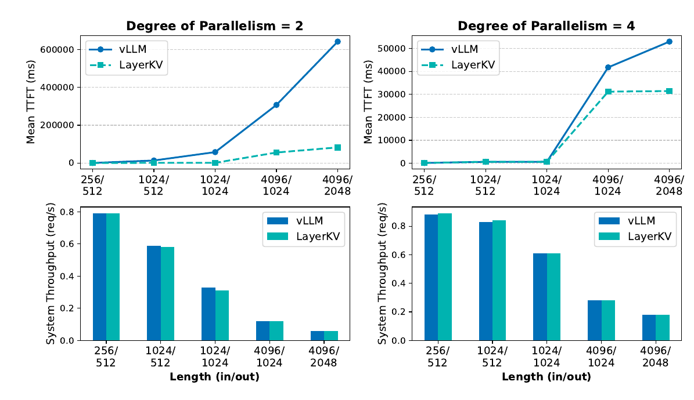
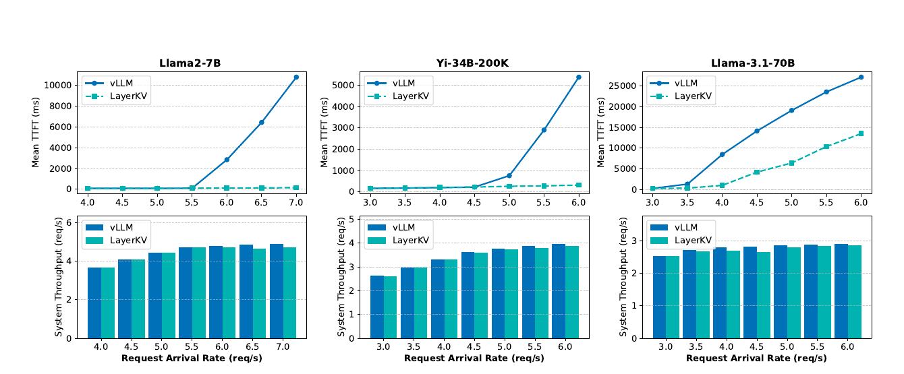
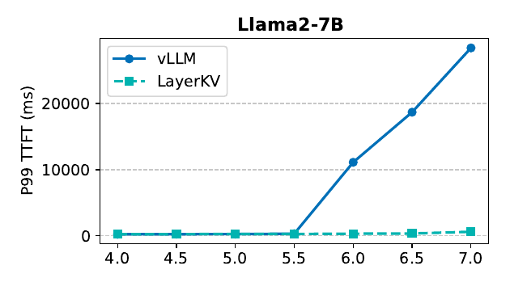

LayerKV: Optimizing Large Language Model Serving with Layer-wise KV Cache Management
LayerKV 將長 prompt 的首 token 延遲追到 GPU KV block 的 admission bottleneck：prefill 產生的 KV 按 layer 非同步移至 CPU，只有在現有 decode requests 的 TPOT 餘裕容許時才插入新 prefill；作者在 L20／vLLM 0.5.5 的指定負載下報告最高 69× mean TTFT、45× P99 TTFT 改善，以及 17.7–28.7% 較低的 SLO violation rate。§5.2.3 · PDF pp.7–8 · Fig.6–7 §5.2.4 · PDF p.8 · Fig.8
分析 這不是把單一 request 的 prefill 算得更快，而是把系統進入飽和後的等待牆往後推；上述最大倍數不可脫離 arrival rate、模型與 baseline 條件解讀。Figure 8 的 17.7–28.7% 依圖軸應解讀為約 17.7–28.7 個百分點，而非相對百分比。
文章目錄
TTFT／TPOT SLO、Prefill–Decode 干擾與 PCIe 重疊
只需要三個前置概念
| 概念 | 最小定義 | 後文用途 |
|---|---|---|
| Prefill／decode | Prefill 平行處理整段 prompt、建立各層 KV 並產生首 token；decode 之後每輪只新增一個 token 及其 KV。 | Prefill 是可插入的長工作，decode 是其 TPOT 會被干擾的既有工作。 |
| TTFT／TPOT | Time to First Token（TTFT）包含排隊與 prefill；Time Per Output Token（TPOT）是同一 request 相鄰輸出 token 的平均間隔。 | LayerKV 用降低 queueing 改善前者，以 scheduler 約束後者。 |
| Paged KV blocks | PagedAttention 讓 request 的 KV 動態映射到不連續 GPU physical blocks，避免按最大生成長度整段預配置。 | 它降低 fragmentation，卻沒有解除 prefill 開始前的 GPU-capacity admission 條件。 |
Prefill 中 attention 工作量隨 prompt length 近似二次增長、FFN 近似線性，因此長 prompt 的 prefill latency 通常呈超線性；decode 則逐 token 重用已存 KV。§2.1.1 · PDF p.2
PagedAttention 解了 fragmentation，卻未解 admission
Iteration-level batching 讓 request 在 token 粒度進出 batch；PagedAttention 則把 KV 動態配置到不連續 blocks。然而，新 request 進入 prefill 時仍需一次取得整段 prompt 所需的 KV blocks。作者描述 vLLM 初始化會先扣除模型與 activation，再將剩餘 GPU memory 的固定比例（例示 90%）保留給 KV；最大 configured input 越長，profiling activation 越大，可留給 KV blocks 的容量反而可能越少。§2.1.2–§2.2 · PDF pp.2–3 · Fig.2
實驗事實 動機實驗使用 Llama-2-7B、單張 L20 48GB、1 req/s、每個長度 100 requests；input 從 128 增至 16,384 tokens，output 固定 512。Figure 1 使用對數 latency 軸；作者觀察 context 到 1,024 時 queueing 已成 TTFT 的主要部分。§1 · PDF pp.1–2 · Fig.1
分析 1,024-token 轉折只屬於這組 hardware、arrival rate、memory configuration 與 output length，不是普遍常數。它把下一節的問題收斂為：如何讓長 prompt 不必等到整份 KV 的 GPU blocks 都空出，卻又不讓插入的 prefill 拖垮現有 decode 的 TPOT 與系統吞吐？
有了這些背景，下一個問題是：PagedAttention 解了碎片，為何長 Prompt 仍卡在 Admission
PagedAttention 解了碎片，為何長 Prompt 仍卡在 Admission
從症狀推回成功條件
Observable symptom
短 prompt 尚能立刻進 prefill，長 prompt 卻因 free GPU KV blocks 不足而排隊；至少要等一個 decode request 完成並釋放 blocks。§2.2 · PDF p.3 · Fig.2
Root mechanism
Prefill admission 以整段 prompt 所需 KV blocks 與當下 free blocks 比較；prompt 越長，即時 GPU residency demand 越大，queueing 遂主導 TTFT。§2.2 · PDF p.3 · Fig.2
Nearest approach gap
vLLM 的 PagedAttention 解決不連續配置與 fragmentation，但管理／offload 仍以 request 為主，沒有讓單一 request 的部分 layers 暫駐 CPU。§2.1.2、§6.2 · PDF pp.2–3、9 · Table 1
Required outcome
降低 prefill 當下所需的 GPU KV blocks 並提早 admission，同時限制既有 decode 的 TPOT、把 PCIe transfer 藏在 compute 後，避免明顯 QPS 損失。§3 · PDF pp.3–4 · Fig.3
作者主張 LayerKV 的設計目標是在不增加硬體、不改模型輸出且不造成 starvation 的前提下降低 TTFT，並維持 TPOT SLO 與系統 QPS。§1、§3 · PDF pp.2、3–4 · Fig.3
控制對象、決策與約束
系統面對兩群 request：等待 prefill 的佇列 \(Q=\{q_1,q_2,\ldots\}\)，以及正在 decode、各自帶有 TPOT SLO 的集合 \(D=\{d_1,d_2,\ldots\}\)。每次 scheduling event 前，runtime 收集 queueing time、decode progress、已產生 token 數與預測的完整輸出長度。§3.1、§4 · PDF pp.4–6 · Eq.1
| 決策 | 輸入／輸出 | 它回答的需求 |
|---|---|---|
| Prefill admission \(n\) | 由每個 decode request 的歷史／預測狀態與 queue 中各 prompt 的預估 prefill time，輸出本輪可取的 queue-prefix 長度。 | 只花費所有 active requests 都負擔得起的 TPOT slack。§3.1 · PDF pp.4–5 · Eq.1–3 · Algorithm 1 |
| 初始 GPU residency \(x\) | 模型共 \(L\) 層；保留 \(x\) 層 KV 在 GPU、offload \(L-x\) 層至 CPU。 | 盡量釋放 blocks，但要求 transfer time 不超過 prefill compute time。§3.1.1 · PDF p.5 · Eq.4 |
| 二次 offload | Eq.5 預測 free blocks；低於 threshold 時，先卸載最近處理 request 的 \(x/2\) 層，仍不足再全卸載。 | 在「保留 KV 等於免費 prefetch」與「未來 admission 容量」間動態取捨。§3.1.1 · PDF p.5 · Eq.5 |
| Placement／transfer | 均勻交錯 GPU/CPU layers、layer-aware block table、獨立 CUDA stream、CPU copy thread；多 GPU 時讓 PCIe all-reduce 優先。 | 把 D2H/H2D transfer 移出 critical path，保住 QPS。§3.1.2–§4 · PDF pp.5–6 |
分析 最準確的形式化是「TPOT slack admission heuristic＋offload overlap model＋KV capacity forecast」。Scheduler 的式子沒有納入 queued request 個別 TTFT deadline、P99 目標、fairness 或 host-memory/PCIe 成本，因此不宜把它描述為完整的 joint TTFT–TPOT optimizer。§3.1 · PDF pp.4–5 · Eq.1–3 · Algorithm 1
適用假設與隱含依賴
- CPU 有足夠 host memory 承接精確 KV cache，CPU–GPU 路徑提供可預測的 PCIe bandwidth。
- Prefill compute 足夠長，可遮蔽非同步 KV offload；短 prompt 需保留更多 GPU-resident layers。
- 輸出長度分類器與 profiling-based \(\alpha,\beta\) 足以支撐 admission 和容量預測；其誤差分布則未提供。
- Table 1 將 LayerKV 定位為 layer-wise、dynamic SLO-aware system，但這是作者的定性分類，不是共同 benchmark。
作者的系統級定位
| Framework | KV cache management | KV cache offloading | SLO-aware scheduling |
|---|---|---|---|
| vLLM | Request-wise | Request-wise | Not support yet |
| DistServe | Request-wise | Not support yet | Static |
| DeepSpeed-FastGen | Request-wise | Not support yet | Static |
| LayerKV | Layer-wise | Layer-wise | Dynamic |
技術路線與取捨
| 路線 | 論文中的定位 | 與 LayerKV 的關係／差異 |
|---|---|---|
| Sequence／tensor／pipeline parallelism；prefill-decode disaggregation | 用多裝置切分計算或階段，分攤 memory pressure。 | LayerKV 宣稱相容，且可在單 GPU 使用；本文沒有組合實驗。§1、§6.1 · PDF pp.2、9 |
| KV quantization、window attention、KV pruning、GQA/MQA | 壓縮或減少 KV entries；作者概括部分方法可能有 accuracy loss。 | LayerKV 搬移完整 KV，不壓縮；代價轉為 host memory 與 PCIe traffic。量化被列為 future work。§6.1、§8 · PDF pp.8–9 |
| InfiniGen、FlexGen 等 CPU／disk offload | 作者認為較偏 offline throughput。 | LayerKV 的主張是 layer-wise transfer 加上線上 TTFT/TPOT 控制；本文沒有直接 benchmark。§6.1 · PDF p.9 |
| vTensor | CUDA virtual-memory abstraction，支援 defragmentation 與 allocation flexibility。 | 作者稱兩者 orthogonal，但沒有實驗整合。§6.1 · PDF p.9 |
| vLLM／PagedAttention | 動態 non-contiguous blocks，提升 batch capacity 與 throughput。 | LayerKV 基於 vLLM 0.5.5，將管理單位從 request 擴成 layer；也是唯一實測 baseline。§4、§6.2 · PDF pp.6、9 · Table 1 |
| DistServe | 把 prefill／decode 放到不同 GPU，隔離兩階段干擾。 | 需要不同資源配置；LayerKV 用同一 serving stack 的 memory movement。只有文字比較。§6.2 · PDF p.9 · Table 1 |
| Sarathi、DeepSpeed-FastGen | Chunked prefill，把 prompt chunks 與 decode tokens 混排，改善 responsiveness／tail latency。 | 最直接的 scheduling alternatives／complements，卻沒有實測比較。§6.2 · PDF p.9 · Table 1 |
| Response-length prediction scheduler | 以前作的 multi-class／percentile range 預測完整 generation length。 | LayerKV 讓同一預測同時影響 TPOT slack 與預期 KV block release。§3.1 · PDF pp.4–5 · Eq.1–5 |
分析 論文最欠缺的不是更多 related-work 名稱，而是與 chunked prefill／P-D disaggregation 的同機比較：這些方法也在處理 prefill 對 decode 與 queue 的干擾，若沒有等硬體、等精度、等 goodput/SLO 的實驗，就無法判斷 LayerKV 的相對邊界。
{kind=link}


問題的限制已經清楚；接著要抓住作者最關鍵的轉念。
不等整條序列退場：LayerKV 如何逐層借出 KV 空間
Problem
長 prompt prefill 需要大量 GPU KV blocks；若 blocks 不足，新 request 即使 GPU 有算力也不能開始，TTFT 被 queueing 主導。
Mechanism
以 request × layer 為管理單位，把可被計算遮蔽的 KV transfer 移到 CPU，降低每個新 request 必須同時常駐 GPU 的 cache。
Control
用 response-length prediction 估算每個 decode request 的 TPOT slack，只在最緊的 slack 仍容許時插入 queue prefix 的 prefills。
Evidence verdict
實驗清楚顯示負載接近飽和時 TTFT 可大幅改善，但 long-context、baseline breadth、重現細節與元件消融仍不足。
作者主張 長 context 下 TTFT 急升的主要來源是 queueing delay；其根因為增長的 KV cache allocation demand 與有限 GPU KV blocks 衝突。LayerKV 不需額外 GPU、不改模型輸出，且可與既有 parallelism 與 scheduling 技術結合。§1–§2.2 · PDF pp.1–3 · Fig.1–2
實驗事實 評估使用 Llama-2-7B、Yi-34B-200K、Llama-3.1-70B，分別配置 1、2、4 張 NVIDIA L20 48GB；在 ShareGPT arrival-rate sweep 中，作者報告 mean TTFT 最高 69×、Llama-2-7B P99 TTFT 最高 45×，並宣稱飽和 throughput gap 低於 3%。Figure 4、6、7 的圖點顯示，這些「up to／低於」headline 的範圍與最大值敘述並不完全一致，詳見實驗結果。§5.1–§5.2.3 · PDF pp.6–8 · Fig.4、6–7
分析 可信的結論應限縮為「在作者的 L20＋PCIe＋大量 host DRAM、vLLM 0.5.5 與指定 workload 上，LayerKV 能以小幅吞吐代價換得顯著 queueing/TTFT 改善」。論文沒有在接近 200K 或 1M context、其他 GPU／互連、或 DistServe／Sarathi／DeepSpeed-FastGen baseline 上驗證。
Takeaways
- 最關鍵的新視角是解除「完整 request KV 必須先有 GPU 空間」的 admission barrier。
- Layer 粒度讓 PCIe offload 與逐層計算形成 pipeline；prompt 越長，越可能把 transfer 藏在較長的 prefill compute 之後。
- SLO-aware 不代表共同最佳化所有 request 的 TTFT/TPOT deadline；公式實際保護的是目前 decode requests 的平均 TPOT。
直覺成立後，再沿著一次完整執行看它如何落成系統。
SLO 預算、Layer-wise Allocation 與二階段 Offload
先走一遍端到端執行
- 觀測：每次 scheduling event 前，runtime 取得每個 decode request 已花時間、已產生 tokens、當前 TPOT，並預測完整輸出長度；同時讀取等待 queue 的 prompts。§3.1、§4 · PDF pp.4、6 · Eq.1
- Admission：scheduler 把每個 active request 尚可承受的平均-TPOT 餘裕換成時間 budget，取最小值；再依序累加 queue 前端 requests 的預估 prefill time，決定可插入的數量 \(n\)。§3.1 · PDF pp.4–5 · Eq.1–3 · Algorithm 1
- 初始配置：對獲准 prefill 的 request，Execution Engine 解出最小 GPU-resident layer 數 \(x\)，使其餘 \(L-x\) 層的 KV transfer 可被 prefill compute 遮蔽。§3.1.1 · PDF p.5 · Eq.4
- 逐層產生與卸載：prefill 依 layer 產生 KV；GPU/CPU layers 均勻交錯，dedicated CUDA stream 將要卸載的 KV 非同步送至 host，block table 同步記下每層位置。§3.1.2、§4 · PDF pp.5–6
- 容量前瞻：系統用預測的 request 完成與新增配置更新未來 free-block 狀態；若低於 threshold，就先卸載最近 request 的部分保留層，必要時全部卸載。§3.1.1 · PDF p.5 · Eq.5
- Decode 取回：後續 decode 到某 layer 前，Cache Engine 將其 CPU-resident KV 搬回 GPU；GPU-resident layers 等於省掉這次 prefetch。§3.1.2、§4 · PDF pp.5–6
- 多 GPU 仲裁：若 tensor-parallel all-reduce 與 swap 共用 PCIe，swap 被切成 subunits，且每個 subunit 在 PCIe 忙時延後，避免 collective critical path 被搶頻寬。§3.1.3 · PDF p.6
分析 步驟 2 保護 decode 的 TPOT，步驟 3–5 解除 prefill 的 GPU-capacity admission barrier，步驟 4、6、7 則試圖把新增 PCIe traffic 移出 compute／collective critical path。三者缺一，便可能分別退化成排隊不降、TPOT 超標或吞吐下降。
SLO-aware Scheduler：把 TPOT 餘裕變成 prefill budget
對每個正在 decode 的 request \(i\)，LayerKV 以已花費時間／已產生 tokens，加上預測的剩餘 tokens／時間，計算若要讓最終平均 TPOT 不超過 \(T_{\mathrm{tpot}}^i\)，尚可容忍多少額外 prefill stall。對所有 active requests 取最小 slack，再逐一累加 queue prefix 的預估 prefill latency；累計值仍小於該最小 slack 才可繼續 admission。§3.1 · PDF p.4 · Eq.1–3 PDF p.5 · Algorithm 1
完整 output length \(N_{\max}^i\) 被建模成多分類問題：模型預測其 percentile range；計算 TPOT slack 時，\(N_{\mathrm{future}}^i\) 採該 range 的下界減去已產生 tokens，以較保守地估算可攤平的未來 token 數。預測器的模型、features、bins、訓練資料、準確率與成本均未提供，只引用前作。§3.1 · PDF p.4 · Eq.1
for each decoding request d_i:
estimate allow_prefill[i] from its TPOT budget
for each queued request q_k:
estimate prefill_time[k]
n = 0
while sum(prefill_time[0 : n+1]) < min(allow_prefill):
n += 1
return n # 可在本輪插入的 queue-prefix 長度語義整理自 Algorithm 1；原偽碼把 \(T_{\mathrm{prefill}}\) 誤指向 Eq.4，實際定義它的是 Eq.3。原文也沒有寫 queue 邊界、\(D=\varnothing\) 或負 slack 的處理。
Layer-wise allocation：以 overlap 決定 \(x\)
若模型有 \(L\) 層，LayerKV 僅讓 \(x\) 層 KV 暫留 GPU，其餘 \(L-x\) 層在 prefill 期間非同步 offload 到 CPU。選擇最小 \(x\) 的條件是預估 offload latency 不超過 prefill latency，即 \(T_{\mathrm{offload}}\le T_{\mathrm{prefill}}\)。長 prompt 的 prefill compute 成長快於線性 transfer，可能得到 \(x=0\)；短 prompt 則需 \(x>0\)。§3.1.1 · PDF p.5 · Eq.3–4
分析 LayerKV 的容量收益不是壓縮或丟棄 KV，而是讓「整個 request 的所有 layers 同時有 GPU blocks」不再是開始 prefill 的必要條件。GPU-resident KV blocks 更像 transfer staging buffer，而非固定 placement。
容量前瞻與二階段 offload
初始 \(x\) 只保證當下 transfer 可被 compute 遮蔽；若之後多個 request 使 GPU blocks 緊張，保留層仍可能阻擋新 request。LayerKV 用 Eq.5 預測未來數個 stage 的 free blocks：當預測值低於 threshold，優先對最近處理的 requests 再 offload \(x/2\) 層，仍不足才全部 offload。估計 release 時使用 output-length range 的中位數；估計 decode allocation 時則保守假設每條 sequence 再需一個 block。§3.1.1 · PDF p.5 · Eq.5
這形成兩級策略：Eq.4 先依 compute/communication overlap 給出初始 residency；Eq.5 再依容量壓力犧牲「留在 GPU 等下次使用」的免費 prefetch。
Layer placement、block table 與執行管線
- 均勻交錯：8-layer 例中若 \(x=4\)，GPU 留 layer 1/3/5/7，CPU 放 0/2/4/6，使 layer 0 KV transfer 可與 layer 0–1 computation 重疊，趕在 layer 2 attention 前完成。§3.1.2 · PDF pp.5–6
- Layer-aware metadata：擴充 block table，除 block ID／location 外，記錄每個 block 哪些 layers 在 GPU 或 CPU。
- Memory layout：初始化時用單一 PyTorch tensor 存 physical KV cache，而不是每層一個 tensor，以支援 request 只配置部分 layers。
- Overlap：dedicated CUDA stream 讓 computation 與 data transfer 並行；另一 CPU thread 把 pinned-memory KV 搬至 pageable memory。Decode 再按 layer 從 host 搬回 GPU。§4 · PDF p.6
分析 §4 寫 prefill 每層 KV 計算後啟動「h2d」transfer；但新 KV 在 GPU 產生且該階段目的是 offload，資料流理應是 device-to-host。這很可能是方向誤植，且「與同一 layer 計算重疊」也欠精確；本摘要保留歧義，不代作者補完。§4 · PDF p.6
多 GPU：讓 all-reduce 優先於 swap
Tensor parallelism 下，無 NVLink 節點的 all-reduce 與 CPU–GPU swapping 都走 PCIe。LayerKV 在每個 swap subunit 前檢查 PCIe 是否忙碌；若 all-reduce 正在進行，就延遲一部分 all-reduce latency 後再檢查。這相當於讓 critical-path collective 優先，swap 只利用 PCIe 空檔。檢查機制、延遲比例、subunit 大小與開銷未提供。§3.1.3 · PDF p.6
Eq.1：每個 decode request 的可用 prefill 餘裕
意義：以秒或毫秒計的額外暫停預算。\(T_{\mathrm{past}}^i\) 包含已經歷的 decode waiting；\(N_{\mathrm{past}}^i\) 可監測；\(N_{\mathrm{future}}^i\) 與 \(T_{\mathrm{future}}^i\) 需預測。§3.1 · PDF p.4 · Eq.1
分析 Eq.1 等價於要求 \(\frac{T_{\mathrm{past}}^i+T_{\mathrm{inserted}}+T_{\mathrm{future}}^i}{N_{\mathrm{past}}^i+N_{\mathrm{future}}^i}\le T_{\mathrm{tpot}}^i\)。這是本摘要依原式重新排列，用來說明右側為何是可消耗的 stall budget；也顯示它約束整段平均，而不是每個 token 間隔的上界。§3.1 · PDF p.4 · Eq.1
Eq.2：所有 decode requests 的共同安全條件
意義：依 queue 順序選取 \(q_1\ldots q_n\)；最容易超出 TPOT 的 active request 成為 bottleneck。原文用嚴格小於號。§3.1 · PDF p.4 · Eq.2
Eq.3：Prefill latency 的粗略 profile-corrected model
變數：\(n_{\mathrm{param}}\) 為模型總參數量，\(n_{\mathrm{hidden}}\) 為 hidden dimension，\(\alpha\) 是 profiling 得到的校正係數。展開後一項對 sequence length 線性、一項二次；batch、kernel efficiency 與 memory-bound 行為未顯式建模。§3.1 · PDF p.4 · Eq.3
Eq.4：Layer-wise KV offload latency
變數：\(L-x\) 是 offloaded layers；2 對應 K 與 V；\(d_{\mathrm{heads}}\) 是每 head 維度，\(n_{\mathrm{heads}}\) 是 attention heads，\(f_{\mathrm{precision}}\) 被原文稱為 precision format，\(\beta\) 是經驗校正係數。選最小 \(x\) 使 \(T_{\mathrm{offload}}\le T_{\mathrm{prefill}}\)。若要維持量綱，\(f_{\mathrm{precision}}\) 應反映 bytes/element，但原文未明示；GQA 下應取 KV heads 或 query heads 亦未說明。§3.1.1 · PDF p.5 · Eq.4
Eq.5：GPU KV blocks 的 stage-level 狀態轉移
意義：下一 stage 的 free blocks 等於現有 free blocks 加預期釋放、減預期配置。預測 horizon、threshold、block size 與 \(x/2\) 的取整方式均未提供。§3.1.1 · PDF p.5 · Eq.5
分析 \(\alpha\)、\(\beta\)、output-length predictor 與 capacity threshold 是決策結果的核心，但論文沒有數值或校準流程；公式給出的是機制框架，不足以單憑本文精確重現。
{kind=link}

方法看似合理，真正的問題是：實驗有沒有把這條因果鏈撐起來？
Length、DoP、Arrival Rate 與唯一 Scheduler 消融
每個主張如何被測試
| 待驗主張 | 測試與控制 | 量測 | 主要邊界 |
|---|---|---|---|
| 長 context 的 TTFT 主要被 queueing 拉高 | Llama-2-7B、1×L20、1 req/s；input 128–16,384，output 固定 512，每點 100 requests。 | TTFT／TPOT 對 context，以及 TTFT 中 queueing／prefill 比例。 | 動機 microbenchmark，只有單一模型、GPU 與 arrival rate。§1 · PDF pp.1–2 · Fig.1 |
| Layer-wise offload 在 context 變長時擴大 TTFT 優勢且不明顯傷 throughput | 三模型；LayerKV 對同版 vLLM；1 req/s；五組固定 input/output。 | Mean TTFT、system throughput。 | 最大 input 4,096；沒有 tail latency 或 TPOT 圖。§5.2.1 · PDF p.7 · Fig.4 |
| 增加 tensor parallel 資源後仍有收益 | Yi-34B-200K；DoP=2 對 4；相同五組長度。 | Mean TTFT、system throughput。 | 同時改變 compute 與 aggregate GPU memory，無法單獨歸因。§5.2.2 · PDF p.7 · Fig.5 |
| 接近飽和時可大幅降低 mean／P99 TTFT，吞吐僅小幅下降 | ShareGPT；三模型各自 sweep arrival rate；LayerKV 對 vLLM。 | Mean TTFT、throughput；P99 TTFT 僅 Llama-2-7B。 | Arrival process、duration、重複次數與誤差帶未提供。§5.2.3 · PDF pp.7–8 · Fig.6–7 |
| SLO-aware scheduler 能防止為 TTFT 犧牲 TPOT | Llama-2-7B；vLLM、LayerKV without/with scheduler；TTFT SLO 3,000ms、TPOT SLO 200ms。 | 任一門檻超標的 request 比例。 | 只消融 scheduler；沒有 TPOT 分布或 predictor-error sweep。§5.2.4 · PDF p.8 · Fig.8 |
平台、模型與工作負載
| 面向 | 設定 | 證據／缺口 |
|---|---|---|
| Server | 每台 8× NVIDIA L20 48GB、64 CPU cores、2,048GB host memory；GPU–CPU 經 PCIe，每兩張 GPU 共用一條 PCIe connection。 | §5.1 · PDF p.6 |
| Software | PyTorch 2.4.0、CUDA 12.2、vLLM 0.5.5。 | Driver、OS、kernel、compiler 與 commit 未提供。§5.1 · PDF p.6 |
| Models | Llama-2-7B：1 GPU／TP=1；Yi-34B-200K：2 GPUs／TP=2；Llama-3.1-70B：4 GPUs／TP=4。 | Yi-34B-200K 與 Llama-3.1-70B 使用 GQA；weight/KV precision 未提供。§5.1 · PDF p.6 |
| Fixed-length workload | 1 req/s；input/output 為 256/512、1,024/512、1,024/1,024、4,096/1,024、4,096/2,048。 | §5.2.1 · PDF p.7 · Fig.4 |
| Real-world workload | ShareGPT；sequence length 4–約 2.3K tokens。對三個模型 sweep request arrival rate。 | Arrival process、抽樣／過濾與輸出截斷未提供。§5.1–§5.2.3 · PDF pp.6–8 · Fig.6 |
| Baseline | 只有 vLLM 0.5.5 的同圖實測。 | DistServe、DeepSpeed-FastGen、Sarathi 只做文字／Table 1 比較，沒有同硬體 benchmark。§5.1、§6.2 · PDF pp.6、9 · Table 1 |
| Metrics | Mean TTFT、system throughput；Llama-2-7B 另有 P99 TTFT；SLO violation rate。 | TPOT 本身的完整分布、goodput、host-memory footprint、PCIe bytes、CPU utilization、能耗與成本未報。§5.2 · PDF pp.7–8 · Fig.4–8 |
| SLO experiment | 僅 Llama-2-7B；TTFT SLO 3,000ms、TPOT SLO 200ms；任一超標即 violation。 | §5.2.4 · PDF p.8 · Fig.8 |
變因控制與公平性判讀
實驗事實 圖中 LayerKV 與 vLLM 使用相同模型、GPU 配置與 workload；LayerKV 本身基於 vLLM 實作，因此 Figure 4–8 對「是否能改善 vLLM 的 queueing/TTFT」具有直接性。§4–§5.2 · PDF pp.6–8
分析 除 Figure 1 明說每點平均 100 requests，主要 evaluation 未提供 test duration、request 數、warmup、重複次數、error bars／confidence intervals、arrival distribution、random seed、精度、實際 PCIe bandwidth、\(\alpha/\beta\)、KV block threshold 或 predictor accuracy。這使曲線趨勢可讀，但無法從本文完整重現或估計不確定性。§1 · PDF p.1 · Fig.1 §5 · PDF pp.6–8
主張—測試 1｜Context 變長：TTFT gap 擴大，1 req/s 吞吐近似
實驗事實 在 Figure 4 的五組 fixed input/output lengths 與 1 req/s 下，三種模型的 vLLM mean TTFT 隨長度急升；LayerKV 曲線較平，作者概括差距最高擴至約一個數量級。兩系統 throughput 幾乎相同。§5.2.1 · PDF p.7 · Fig.4
分析 依 Figure 4 圖點與座標刻度近似讀值，Llama-2-7B 在 1,024/1,024 的 mean TTFT 約為 vLLM 34,101ms、LayerKV 218ms，即約 156×；Yi 同點亦約 74×。這不只超過「一個數量級」，也超過 Abstract／Conclusion 的全域「up to 69×」。因此 69× 應只視為作者挑出的 Figure 6 endpoint，不是圖集中可見的最大比值。§5.2.1 · PDF p.7 · Fig.4
分析 這支持「當負載尚未造成 LayerKV 大量 decode swap 時，可釋放 admission capacity 而幾乎不減 throughput」。但最大 input 僅 4,096，不等於已驗證 16K、200K 或 1M-context serving。§5.2.1 · PDF p.7 · Fig.4
主張—測試 2｜Tensor parallelism：更多資源縮小兩者差距
實驗事實 Figure 5 以 Yi-34B-200K 比較 DoP=2 與 4。DoP 增加帶來更多 compute 與 aggregate GPU memory，兩系統 TTFT 都下降；LayerKV 仍有 TTFT 優勢，但 marginal throughput gap 變小。§5.2.2 · PDF p.7 · Fig.5
分析 當 GPU memory 容量壓力被更多裝置緩解，LayerKV 解除 admission barrier 的相對價值自然下降；Figure 5 是資源敏感度，不是多 GPU PCIe guard 的獨立消融。
主張—測試 3｜Arrival rate：最大 69× mean、45× P99 TTFT
實驗事實 ShareGPT arrival-rate sweep 中，vLLM 超過容量門檻後 mean TTFT 急升，LayerKV 維持較低；作者報告最高 69× mean TTFT reduction。Llama-2-7B 的 P99 圖另報最高 45× reduction。§5.2.3 · PDF pp.7–8 · Fig.6 PDF p.8 · Fig.7
分析 Figure 6 的 69× 可由 Llama-2-7B、7 req/s 末點約 10,800／156ms 重現。Figure 7 的 45× 也可由 7 req/s 約 28,412／627ms 重現，但 sweep 中 6.5 req/s 約 18,698／359ms，比例約 52×，才是圖上的最大 P99 ratio。本文「up to 45×」用語因而不精確。§5.2.3 · PDF p.8 · Fig.6 PDF p.8 · Fig.7
分析 低負載時 throughput 隨 arrival rate 增加；過載後達瓶頸。LayerKV 需在 decode 從 CPU swap 部分 KV，因此吞吐略低於 vLLM。作者稱在所測範圍差距始終低於 3%，但 Figure 6 圖點不完全支持：例如 Llama-3.1-70B、4.5 req/s 約為 2.81 對 2.65 req/s，若相對 vLLM 計算 gap 約 5.7%；Llama-2-7B 的 6.5 req/s 亦約 4.5%。§5.2.3 · PDF p.8 · Fig.6
分析 69× 很可能主要反映 LayerKV 把 saturation knee 往右移：同一 offered load 下，vLLM 已進入長 queue，LayerKV 尚未或較輕。這是線上容量的重要收益，但不表示單一 request 的 service time 被加速 69×；更完整的比較應同時固定 achieved goodput 或 SLO-feasible load。
主張—測試 4｜SLO：scheduler 避免為 TTFT 犧牲 TPOT
實驗事實 在 Llama-2-7B、TTFT/TPOT 閾值 3,000/200ms 下，作者報告 LayerKV 的 violation rate 比 vLLM 低 17.7–28.7%。Figure 8 也顯示無 SLO-aware Scheduler 的 LayerKV 在 5.5 req/s 時不如 vLLM。§5.2.4 · PDF p.8 · Fig.8
作者主張 作者把無 scheduler 時增加的 violations 歸因於 TPOT 上升；但 Figure 8 只報 TTFT 或 TPOT 任一超標的合併比例，沒有分開呈現兩者。§5.2.4 · PDF p.8 · Fig.8
分析 Figure 8 y 軸名為「Violation Rate (%)」，刻度卻顯示 0.0–0.6 fraction。依圖點近似讀值，6 req/s 為 0.365 對 0.188、6.5 req/s 為 0.584 對 0.297，差值正是 17.7 與 28.7 個 percentage points；若算相對 reduction 則約 48.5% 與 49.1%。因此原文的「17.7–28.7% lower」單位表達不精確。§5.2.4 · PDF p.8 · Fig.8
| 結論 | 支持程度 | 邊界 |
|---|---|---|
| Layer-wise offload 可降低 vLLM 的 queueing/TTFT | 三種模型、fixed-length 與 ShareGPT 方向一致 | 只在 L20/PCIe 與一個 baseline |
| 大幅 tail latency 改善 | Llama-2-7B P99 圖支持 | 34B/70B 未報 P99 |
| 不犧牲模型品質 | 機制上不壓縮／丟棄 KV | 沒有 accuracy、task quality 或 bitwise-equivalence 實驗 |
| 不需額外硬體 | 不需額外 GPU | 實驗依賴 2TB host DRAM 與 PCIe；資源成本被轉移而非消失 |
| 適用 200K/1M context | 未直接支持 | 主要 fixed input 最大 4,096；ShareGPT 約 2.3K |
唯一明確元件消融：有／無 SLO-aware Scheduler
實驗事實 Figure 8 同時畫出 vLLM、LayerKV without scheduler、LayerKV with scheduler；scheduler 在 5.5–7 req/s 的合併 violation-rate 曲線都低於無 scheduler 版本。§5.2.4 · PDF p.8 · Fig.8
分析 這直接支持 scheduler 能降低「TTFT 或 TPOT 任一超標」的合併 violation rate；但 Figure 8 沒有分開報 TTFT／TPOT violation 或 TPOT 分布，因此「差距由 TPOT 上升造成」仍是作者的機制解釋，不是圖本身可單獨驗證的結果。
工作負載／資源敏感度
| Sweep | 觀察 | 能回答什麼 |
|---|---|---|
| Context length（Fig.4） | Length 越大，TTFT gap 越明顯；1 req/s throughput 接近。 | 容量需求增加時方法較有價值。§5.2.1 · PDF p.7 · Fig.4 |
| DoP=2/4（Fig.5） | 更多 compute/memory 降低 TTFT，縮小 throughput 差距。 | 收益與資源壓力相關。§5.2.2 · PDF p.7 · Fig.5 |
| Arrival rate（Fig.6–8） | 接近 saturation 時 TTFT、tail 與 SLO 差距快速擴大。 | 方法主要改善 queueing regime。§5.2.3–§5.2.4 · PDF pp.7–8 · Fig.6–8 |
分析 論文沒有分別移除或 sweep：layer-wise allocation、offload、均勻 layer spacing、recent-request-first、\(x/2\) policy、KV threshold、output-length predictor、CUDA stream、CPU copy thread、PCIe busy guard、transfer subunit、\(alpha\) 或 \(beta\)。因此除了 scheduler 外，無法量化每個元件的獨立貢獻或互動。
分析 Eq.1 用預測 range 下界估 TPOT slack，Eq.5 卻用 range 中位數估 block release；後者較不保守。論文沒有擾動 prediction error 或 calibration，無法判斷 SLO 保證對錯估輸出長度有多脆弱。§3.1 · PDF pp.4–5 · Eq.1–5

{kind=link}

{kind=link}

{kind=link}


數據回答了部分問題；剩下的是適用邊界與仍未被證明的部分。
69×／45× 的數字矛盾、缺失隔離與長 Context 外推
優點
- 正確切中 queueing 根因：把 TTFT 問題從單純 kernel/prefill compute 擴展到 KV-capacity admission，Figure 1–2 與 end-to-end load curves 前後一致。
- 細粒度但不近似模型：request × layer placement 擴大 memory-management 空間，不需改 attention 或刪減 KV。
- 跨層協同：scheduler、allocator、block table、CUDA stream 與 multi-GPU PCIe guard 串成可落地的 serving design，而非單一 cost model。
- 同時看 latency 與 throughput：報告 mean/P99 TTFT、throughput 與 violation rate，並承認 overload 時的 throughput cost。
證據與重現限制
- Baseline 狹窄：實測只有 vLLM 0.5.5；與 DistServe、DeepSpeed-FastGen、Sarathi、FlexGen、InfiniGen 的比較僅為文字或作者自製 Table 1。§5.1、§6.2 · PDF pp.6、9 · Table 1
- Long-context gap：動機到 16K，但主要 Figure 4 最大 4,096 input；ShareGPT 約 2.3K。模型名「Yi-34B-200K」不等於跑過 200K context。§1、§5.1–§5.2.1 · PDF pp.1、6–7 · Fig.1、4
- 單一平台：只測 NVIDIA L20／PCIe／2,048GB host RAM；未測不同 PCIe generation、NVLink、NUMA、較小 DRAM、異質或多租戶環境。§5.1 · PDF p.6
- 統計資訊不足：主要 evaluation 無 error bars、run counts、warmup、arrival process 或 confidence intervals。§5 · PDF pp.6–8
- 核心參數未披露：predictor、\(\alpha,\beta\)、block threshold、transfer chunk 與 PCIe check 細節不足以重現。§3.1–§4 · PDF pp.4–6 · Eq.1–5
- Quality 主張未實測：「不犧牲 output performance／lossless precision」在機制上合理，但沒有 accuracy 或 bitwise equivalence 驗證。§1、§6.1 · PDF pp.2、9
系統風險
分析 平均 TPOT 不等於 token-level smoothness：Eq.1 允許某次 inter-token stall 很長，只要之後能把整段平均攤回 SLO；對即時互動的 jitter／P99 TPOT 可能仍不可接受。§1、§3.1 · PDF pp.1、4 · Eq.1
推測 預測誤差：若 output-length predictor 高估剩餘 token，Eq.1 可能給過多 prefill budget；若 Eq.5 過早預測 request 結束，又會低估未來 block 壓力，導致 TPOT violation 或額外 preemption。
推測 Thrashing：低於 threshold 就先 offload \(x/2\)、不足再全部 offload，但無 hysteresis 描述；bursty load 可能在 offload/prefetch 間反覆震盪。
分析 Fairness 未證：作者宣稱不造成 starvation，但 Algorithm 1 只取 queue prefix，沒有 max-wait bound 或 waiting-time distribution。若 head request 太長、反覆無法滿足最小 TPOT slack，可能形成 head-of-line blocking。§1、§3.1 · PDF pp.2、5 · Algorithm 1
推測 資料安全：把包含 prompt state 的 KV 從 GPU 搬到 pinned/pageable host memory，會增加多租戶隔離、zeroization 與 OS page exposure 的攻擊面；論文未討論。§4 · PDF p.6
原文勘誤與歧義
- Section 3 標題拼作「Desgin」。
- Algorithm 1 與 §3.1.1 將 prefill latency 交叉引用成 Eq.4；實際為 Eq.3。
- §4 將 prefill offload transfer 稱為 h2d，方向與資料流疑似相反。
- Figure 8 的「%」軸卻用 0.0–0.6 fraction；由圖點重現後，17.7–28.7 是 percentage-point 差，不是相對百分比。
逐層 KV 管理還能延伸到哪些層級
由原式推得的 residency 邊界
分析 由 Eq.4 的 \(T_{\mathrm{offload}}\le T_{\mathrm{prefill}}\) 可整理出原文未顯式寫出的最小整數 residency：
它清楚顯示：更長 prefill compute 或更快 PCIe 讓 \(x\) 下降；較大 KV bytes、較慢 PCIe 或更快的 prefill kernel 反而迫使更多 layers 留在 GPU。這是依原式推導，不是作者額外實驗。§3.1–§3.1.1 · PDF pp.4–5 · Eq.3–4
最值得驗證的研究假說
- 收益來自 saturation-knee shift：用固定 achieved goodput、固定 SLO-feasible load 與 open-loop/closed-loop arrival 分別比較，拆開 queueing capacity 與 service-time 加速。
- Prediction-aware safety：以 quantile／conformal prediction 與 online calibration 取代單一 bucket；Eq.1 用保守下分位、Eq.5 用 release 的保守上界，量測 misprediction 對 TPOT tail、violations 與公平性的敏感度。
- Closed-loop memory controller：讓 \(x\)、layer spacing、KV threshold、transfer chunk 與 hysteresis 由即時 compute/PCIe telemetry 控制，並比較固定 \(\alpha,\beta\) heuristic。
- Factorial composition：分別與 chunked prefill、vTensor、prefix caching、KV quantization、prefill-decode disaggregation 組合，測互補、重疊與衝突。
- 真正的 long-context scaling：測 16K／64K／128K／200K input、不同 output distribution，以及 GPU memory、host memory、PCIe bytes、TTFT/TPOT tail 的完整 Pareto frontier。
作者主張 作者計畫整合 KV cache quantization，以支援更大模型／更長 context；也計畫加入 prefill-decoding disaggregation，進一步降低 queueing 並提高 throughput。§8 · PDF p.9
五條控制公式、KV 狀態與證據索引
| 正式標題 | LayerKV: Optimizing Large Language Model Serving with Layer-wise KV Cache Management |
|---|---|
| 作者 | Yi Xiong、Hao Wu、Changxu Shao、Ziqing Wang、Rui Zhang、Yuhong Guo、Junping Zhao、Ke Zhang、Zhenxuan Pan（Ant Group） |
| 版本資訊 | arXiv:2410.00428v3 [cs.DC]；初稿 2024-10-01，v3 修訂 2024-10-09；論文未提供正式會議或期刊資訊。 |
| Canonical page | https://arxiv.org/abs/2410.00428 |
| Canonical PDF | https://arxiv.org/pdf/2410.00428 |
| DOI | 10.48550/arXiv.2410.00428 |
| 本地 PDF | 開啟本地 PDF |
| 頁數 | 共 11 頁 |
分析 歸入 LLM Systems / KV Cache Management：主要貢獻位於 serving runtime 的記憶體管理與排程層，把 KV block 的配置、位置追蹤與 offloading 從 request 粒度細化到 layer 粒度，再以 SLO-aware scheduler 控制 prefill admission；它不是新的模型架構或注意力近似法。§3–§4 · PDF pp.3–6 · Fig.3
術語表
- TTFT
- Time to First Token；request arrival 到第一個輸出 token，本文定義包含 queueing delay 與 prefill latency。
- TPOT
- Time Per Output Token；同一 request 相鄰輸出 tokens 的平均間隔，亦稱 TBT／ITL。
- SLO／SLA
- Service Level Objective／Agreement。本文 scheduler 用 TPOT 目標限制插入 prefill；實驗以 TTFT 或 TPOT 任一超標計 violation。
- KV cache
- Attention 各層保存先前 tokens 的 key/value states，避免 decode 重算；容量隨 tokens 與 layers 增長。
- KV block
- PagedAttention 管理 KV cache 的 physical memory unit；LayerKV 再加入 layer-level location metadata。
- Prefill
- 一次處理 prompt、建立 KV 並產生首 token 的階段，計算量通常隨 context 超線性。
- Decode
- 之後逐 token 生成的迭代階段；每輪為新 token 產生 KV。
- PagedAttention
- 讓 request 的 KV cache 映射至不連續 GPU blocks，減少預配置與 fragmentation。
- GQA
- Grouped-Query Attention；多個 query heads 共用較少 KV heads，降低 KV footprint。
- DoP／TP
- Degree of Parallelism／Tensor Parallelism；本文三模型分別以 TP 1、2、4。
- QPS
- Queries Per Second；本文亦以 system throughput（req/s）報告。
- D2H／H2D
- Device-to-Host／Host-to-Device transfer。Prefill offload 應是 D2H；decode 取回 CPU-resident KV 為 H2D。原文 §4 有方向疑似誤植。
重點來源索引
- 動機與 TTFT breakdown：§1，PDF pp.1–2，Figure 1；Llama-2-7B、L20、1 req/s、100 requests。
- KV block admission bottleneck：§2.2，PDF p.3，Figure 2。
- 系統架構：§3，PDF p.4，Figure 3。
- TPOT slack：§3.1，PDF p.4，Equation 1。
- Queue-prefix admission：§3.1，PDF p.4，Equation 2。
- Prefill latency model：§3.1，PDF p.4，Equation 3。
- Scheduler pseudo-code：§3.1，PDF p.5，Algorithm 1。
- Layer-wise offload model：§3.1.1，PDF p.5，Equation 4。
- KV block capacity forecast：§3.1.1，PDF p.5，Equation 5。
- Fixed-length results：§5.2.1，PDF p.7，Figure 4。
- Tensor-parallel resource sensitivity：§5.2.2，PDF p.7，Figure 5。
- Arrival-rate mean TTFT／throughput：§5.2.3，PDF pp.7–8，Figure 6。
- P99 TTFT：§5.2.3，PDF p.8，Figure 7。
- SLO violation／scheduler ablation：§5.2.4，PDF p.8，Figure 8。
- 作者的系統比較：§6.2，PDF p.9，Table 1。
外部原文：arXiv landing page · PDF v3 · arXiv HTML。